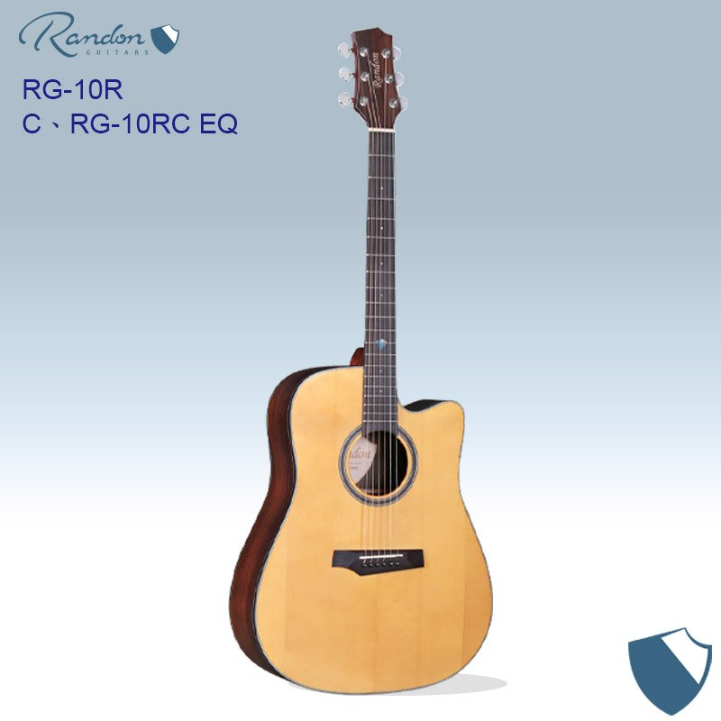
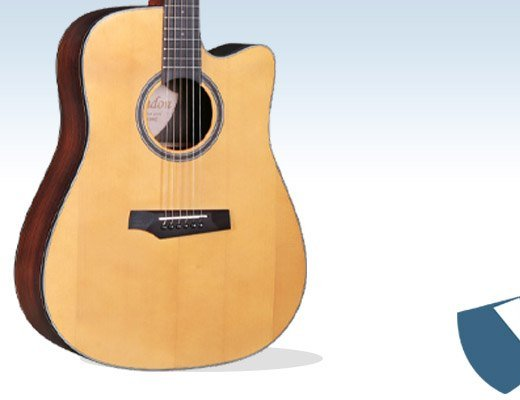
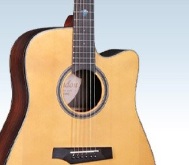
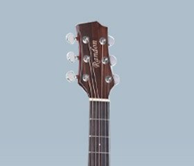

🔍 點擊放大照片為品牌提供之商品圖；門市實拍與 360° 展示 待補
Details
細節看清楚
缺角方便彈到高把位。
面板材質 待補
弦鈕規格 待補
照片看不出手感，來店試彈最準
美麗島站 2 號出口。在泰德買的琴，調整不限次數。




🔍 點擊放大照片為品牌提供之商品圖；門市實拍與 360° 展示 待補
Details
缺角方便彈到高把位。
面板材質 待補
弦鈕規格 待補
美麗島站 2 號出口。在泰德買的琴，調整不限次數。